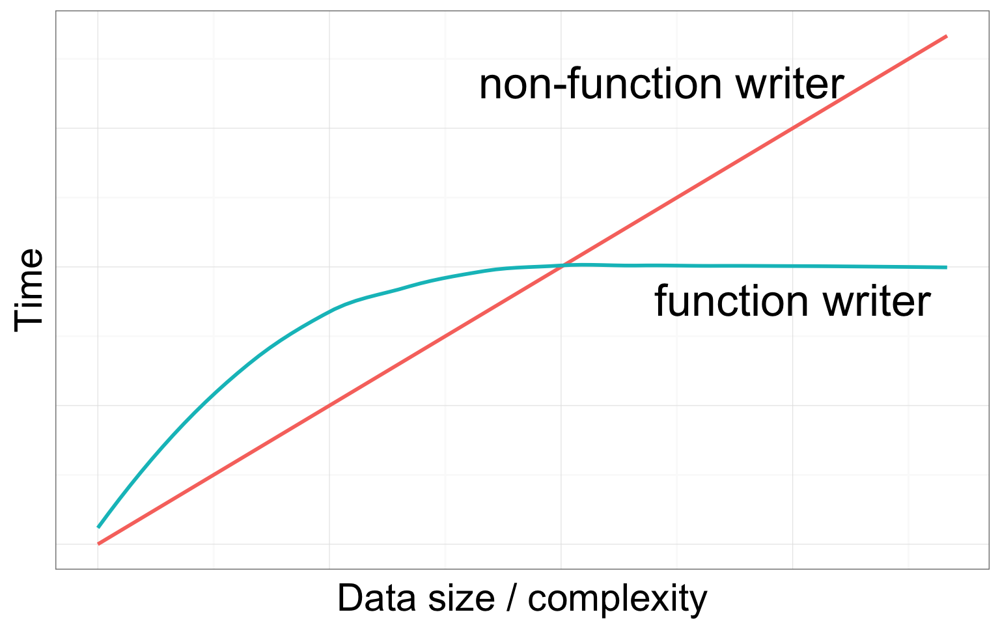

Use functions and turn hundreds lines of code to a single or few lines of code.
Orgainze your R script, data, and documentation in a well-defined structure.
Collaborate and share your methods with others. Editing history traceable via git control.
Use ‘R CMD check’ to validate your R script.
Publishable work
A minimal package should include:
R functions (saved in .R files)
Metadata (DESCRIPTION file)
Namespace (NAMESPACE file generated via roxygen2; connect your package to others)
Documentation (generated via roxygen2; help page)
Vignette (user guide)

Your_Function_Name <- function( Your_Variables ){
#Do something here
}Fecundity = a x Length b
fecundity <- function(L){
y <- 0.002*(L^3)
return(y)
}fecundity(36)## [1] 93.312Fecundity = a x Length b
fecundity <- function(L, a, b){
y <- a*(L^b)
return(y)
}fecundity(L=36, a=0.002, b=3)## [1] 93.312fecundity(L=36, a=0.2, b=3)## [1] 9331.2Use conditional statement to choose an analytical method
myFunction <- function(method="A"){
if(method=="A"){
#Analyze data in this way
}else if(method=="B"){
#Analyze data in that way
}else if(method=="C"){
#Analzye data in that way
}
}Your R package is built in your computer; a copy can be saved in the cloud. They’re syncronized via Git.
| Local | Cloud | |
|---|---|---|
| storage space | Your PC | Github.com |
| software | RStudio | Git |
Install R, RStudio, and Git in your computer
Create a Github account www.github.com
Install library devtools and roxygen2
Set up R configuration
Select Build and then Configure Build Tools on menu bar
Select Package in the pop-up window
Check and configure Roxygen options
Create folders R and man
Create a text file named DESCRIPTION
Include the following information:
Package: MyRpackage
Version: 1.0
Title: This is title of MyRpackage
Author: Alex Chen
Maintainer: Alex Chen <chen.1735@osu.edu>
Description: A brief description about MyRpackage
Depends: R (>= 3.1.0)
License: GPL (>= 2)
Imports: [Put other packages here if needed]More details about DESCRIPTION
Create function files (e.g., fecundity.R)
and save them in the R folder
#' A title of your function
#'
#' A short description about the function.
#' @param L fish length
#' @param a constant a
#' @param b constant b
#' @return This function returns fish fecundity
#' @export
#' @examples
#' fecundity(36, 0.2, 3)
fecundity <- function(L, a, b){
y <- a*(L^b)
return(y)
}We use roxygen2 to generate functions’ documentation.
Click Build & Reload under Build menu
Fix any issue if build not successful
Make sure to rebuild if any change was made
Try ?fecundiy to see if help page shows up
Make sure the Git program was installed.
Click Commit under Git menu
Check files and add commit message and then hit commit
Close commit message window
Click Push button to upload files to Github repository
Go to your Github site and see if files are updated
Go ahead and create a second R function
Rebuild your package locally, and then upload the file to your Github
Install the package of a person next to you. Use the following code:
library(devtools)
install_github("ACCOUNT/XPACKAGE")Import the library: library(XPACKAGE)
Type ?fecundity in R console (There should be two fecundity functions associated with different packages)
Type ?XPACKAGE::fecundity to see the help page
Click Index at the bottom to see the second function
Run the second function to see if it works
One-page tutorial (by Hilary Parker)
R package primer (by Karl Broman)
R packages (by Hadley Wickham)
{kind=link}
{kind=link}
{kind=link}
{kind=link}
{kind=link}
{kind=link}
{kind=link}
{kind=link}
{kind=link}
{kind=link}
{kind=link}
{kind=link}